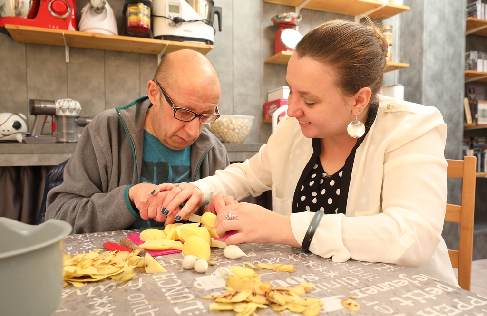

En France, entre 8 et 11 millions d'aidants s'occupent d'un proche au quotidien. Nombreux sont ceux qui ne se reconnaissent pas comme tels, considérant leur aide comme un devoir naturel (conjoint, parent, enfant).
Or, cette aide peut avoir un impact et entraîner des risques d'épuisement physique et psychologique.
Le Département du Nord s’engage, aux côtés de ses partenaires, à soutenir les aidants grâce à des solutions de prise en charge et des aides.
Être aidant, qu’est-ce que c’est ?
Je suis un aidant si je remplis toutes les conditions suivantes :
- j’assure une présence régulière et fréquente qui permet le maintien à domicile d’une personne âgée à titre non professionnel
- j’accomplis des actes ou des activités de la vie quotidienne à titre non professionnel
- je suis son conjoint, son partenaire PACS (PActe Civil de Solidarité), son concubin, ou tout autre parent ou proche avec qui j’entretiens des liens étroits et stables
Quels sont mes droits ?
Le droit au répit
Pour vous soulager et vous permettre de prendre du temps pour vous, des heures d’aide peuvent être proposées dans le cadre du plan d’aide APA (Allocation Personnalisée d'Autonomie) de la personne que vous accompagnez. Ces heures octroyées permettent une prise en charge par un professionnel d’un certain nombre d’heures d’aide aux gestes aux corps et à la vie quotidienne.
Le droit à un congé indemnisé
Un congé pour prendre soin d'un proche en perte d’autonomie peut bénéficier d'une indemnisation : l'Allocation Journalière du Proche Aidant (AJPA). L’AJPA est versée par la Caisse d'Allocations Familiales ou la Mutualité Sociale Agricole.
- pour tout savoir sur l'AJPA (montant et conditions), consultez la page dédiée sur le site de la Caisse d’Allocations Familiales (CAF)
- si vous dépendez de la Mutualité Sociale Agricole (MSA), vous pouvez télécharger le formulaire de demande sur le site MSA.
Des aides pour l’aidant reconnu indispensable
Est considéré comme indispensable un aidant qui assure une présence ou une aide essentielle et irremplaçable au soutien à domicile d’un bénéficiaire de l’APA (Allocation Personnalisée d'Autonomie) et reconnu comme tel par un évaluateur médico-social.
- une aide au répit dans la limite d’un plafond d’environ 500 € par an pour me permettre de faire prendre en charge mon proche si je m’absente (activités de détente, repos, etc.)
- une aide pour prendre en charge mon proche en cas d’hospitalisation me concernant, dans la limite d’un plafond d’environ 1000 € à chaque hospitalisation.
Les solutions de répit possibles
En fonction de vos besoins et de vos souhaits et de ceux de la personne que vous aidez, vous pouvez bénéficier de solutions de répit à domicile ou à l’extérieur du domicile.
Les solutions de répit au domicile
Pour pallier votre absence ou votre besoin de repos, le Département peut prendre en charge, déduction faite de la participation financière de la personne aidée :
Des heures supplémentaires d’intervention
Dans le cadre d'une demande d'APA et après évaluation par un service médico-social du Département, vous pouvez faire appel à :
- une structure prestataire qui vous propose un intervenant. La prise en charge du Département est de 22 € par heure.
- une structure mandataire qui vous aide à trouver un intervenant. Dans ce cas, vous êtes l’employeur du salarié et la structure vous accompagne dans les formalités administratives (fiche de paie, contrat de travail, etc...). La prise en charge du Département est de 14,73€ par heure.
- un intervenant de votre choix que vous employez directement. Dans ce cas, vous êtes autonome pour l’ensemble des démarches administratives. La prise en charge du Département est de 12,10€ par heure.
Des heures d’interventions de courte durée
N’excédant pas 30 minutes, elles sont réalisées à domicile en urgence car non prévisibles. Ce type d’aide, appelé "garde itinérante", peut couvrir une plage horaire pouvant atteindre les 24h/24 et 7j/7.
Des heures de relayage à domicile
Ce type de service permet la mise en place d’un temps minimum de "remplacement" à domicile du proche aidant si ce dernier part quelques jours en cure ou même en vacances. Le Département a fixé la durée minimum d’une intervention de relayage à domicile à 24 heures (soit une journée et une nuit). Conformément à la loi, cette intervention ne peut aller au-delà de 6 jours consécutifs.
A noter : ces interventions sont prises en charge, sur facture, par le Département selon un tarif horaire forfaitaire fixé par délibération du Conseil départemental et dans la limite des plafonds fixés par la loi.
Les solutions de répit en établissement
L’accueil de jour
Ce type de répit s’adresse à toute personne âgée atteinte de la maladie d’Alzheimer, d’une maladie apparentée ou d’une autre maladie neurodégénérative et/ou en perte d’autonomie physique.
L’accueil de jour propose de nombreuses
activités collectives, dont des activités de stimulation cognitive et physique encadrées par une équipe pluridisciplinaire. La prise en charge du Département est de 41€ par jour ou 20,50€ la demi-journée.
L’hébergement temporaire
En cas de difficulté ponctuelle ou d’absence de l’aidant (congés, retour d’hospitalisation, travaux, etc.), l’hébergement temporaire en EHPAD (Établissement d'Hébergement pour Personnes Âgées Dépendantes) offre la possibilité d’être accueilli jusqu’à 90 jours par an, à temps complet ou partiel, le week-end ou encore la nuit. Le montant de la prise en charge du Département est de 31 € par jour pour les frais d’hébergement (auxquels s'ajoutent la prise en charge du tarif dépendance de l’établissement).
L'accueil familial
C'est une solution d’hébergement temporaire ou permanente pour votre proche âgé dans un cadre familial. L'accueillant familial doit obligatoirement bénéficier d'un agrément accordé par le Président du Conseil départemental. La prise en charge du Département est de 47€ par jour en accueil temporaire et de 35€ par jour en accueil de jour.
De quelles prises en charge puis-je bénéficier ?
Les solutions de répit font l'objet d’une prise en charge financière par le Département.
Cette prise en charge ne couvre généralement pas l’intégralité du montant de la prestation. Par ailleurs, en plus de cet éventuel reste à charge, un "ticket modérateur" peut-être facturé par la structure d'accueil.
| Offre de service de répit | Participation financière du Département |
|---|---|
| Intervention supplémentaire à domicile |
|
| Garde itinérante | 10,50 € de l'heure en mode prestataire |
| Où ? | Accueil temporaire | Accueil de jour |
|---|---|---|
| Établissement | 31 € par jour pour les frais d'hébergement, plus la prise en compte du tarif dépendance de l'établissement | 41 € par jour, soit 20,50 € la demi-journée |
| Famille d'accueil | 47 € par jour | 35 € par jour |
Où m'informer ?
- Les Plateformes d'accompagnement et de répit. Ces plateformes vous informent et vous accompagnent afin de prévenir les risques d’épuisement, de stress, d'anxiété et de faciliter le maintien à domicile de votre proche.
- Les relais autonomie. Ces points d'accueil de proximité vous informent et vous orientent vers un service approprié.
- Les Pôles autonomie des Directions Territoriales de Prévention et d'Action Sociale (DTPAS). Ces Services vous informent notamment sur les solutions d'accueil familial.